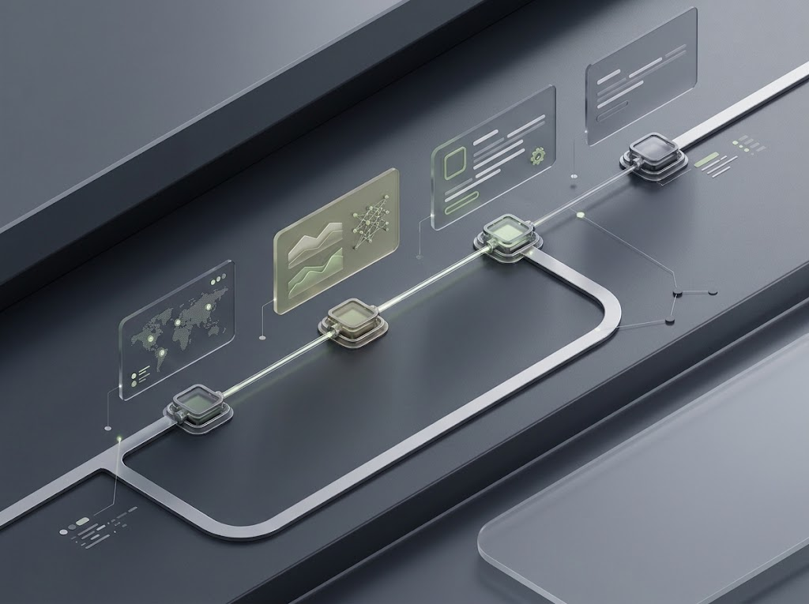
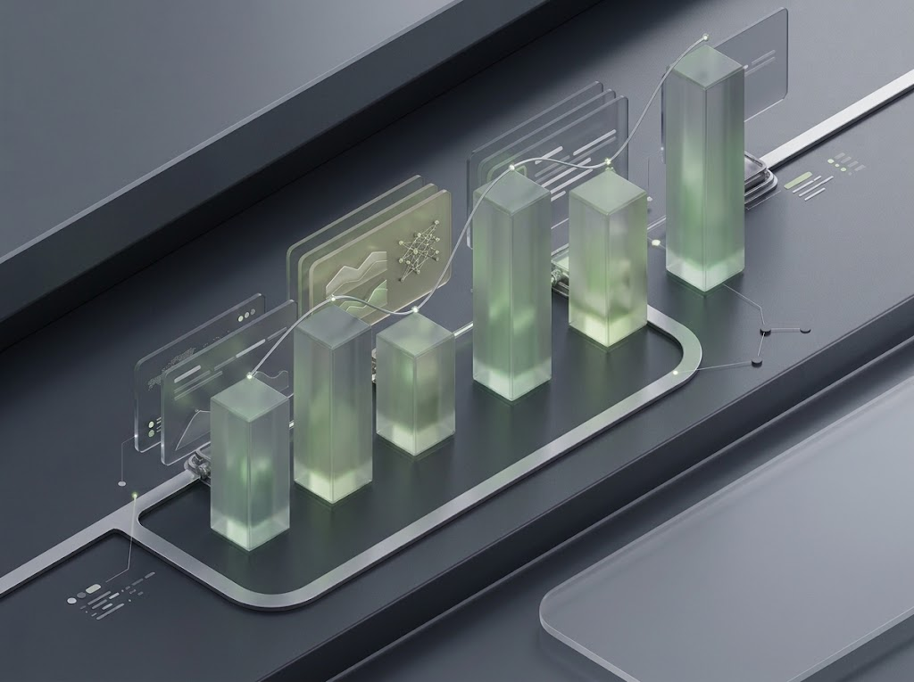

Votre réputation, sous contrôle
Protégez votre réputation.
Reprenez la main.
Comprenez ce que vos avis disent de votre activité, repérez les situations à risque et transformez chaque signal en action claire. Sans perdre le fil, ni le contrôle.
Découvrir notre méthode
02 — Une vision claire
Chaque avis compte. Chaque action est maîtrisée.
Rassemblez les signaux importants dans une vue unique. Comprenez chaque situation, suivez son avancement et gardez la décision, du premier constat jusqu’à la clôture.
CHEMINEMENT DES DOSSIERS
03 — Comprendre les signaux
Détectez les avis qui méritent votre attention.
Repérez les signaux faibles, les avis sensibles et les tendances qui se dessinent. L’analyse vous aide à prioriser les dossiers et à concentrer vos efforts là où ils sont les plus utiles.
examiner
THÈMES REPÉRÉS DANS LES AVIS
04 — Passer à l’action
Préparez une réponse adaptée à chaque situation.
À partir du contexte disponible, préparez les prochaines étapes : réponse à examiner, éléments à rassembler ou démarche à envisager. Rien n’est envoyé ni engagé sans votre validation.
VOTRE PARCOURS DE VALIDATION
05 — Garder le contrôle
Chaque étape reste visible et sous votre contrôle.
Retrouvez les décisions, les validations et l’avancement des dossiers. Vous conservez la main sur les actions importantes et disposez d’un historique lisible pour savoir ce qui a été fait et ce qui reste à faire.

06 — Mesurer les progrès
Transformez le suivi en amélioration continue.
Suivez l’évolution des avis, les sujets qui reviennent et l’avancement des actions. Vous obtenez une vision plus claire des tendances pour ajuster vos priorités et faire évoluer votre gestion de la réputation dans le temps.
